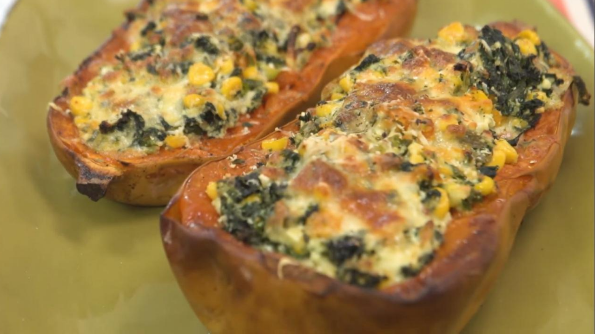

Calabaza rellena

Ingredientes
- Un zapallo anco chico.
- Hierbas frescas.
- 2 ajos aplastados.
Para el relleno
- Un diente de ajo
- Un puerro.
- 4 hojas de acelga.
- Un choclo.
- Una cdta de ají molido.
- Una cda de orégano.
- 150 g de ricota.
- Sal y pimienta, a gusto.
- Nuez moscada, c/n.
- 50 g de queso rallado.
- 200 g de muzzarella.
Procedimiento
- Cortar a la mitad la calabaza a lo largo y retirar las semillas.
- Realizar unos cortes superficiales en la pulpa y llevar al horno junto con un ajo aplastado, hierbas,
sal y pimienta.
- Cocinar durante 45 minutos a 200°.
- Ahuecar la calabaza para rellenar. Reservar la pulpa.
- Para el relleno, rehogar las verduras con el ajo. Condimentar y reservar.
- Agregar parte del queso rallado, la ricota y la pulpa de la calabaza.
- Mezclar y rellenar la calabaza.
- Colocar la muzzarella y el queso rallado.
- Gratinar en el horno.